Track the storm
Radar, without the clutter.
Give the HookEcho map the screen. Official warnings and emergencies stay visible in a clear bottom banner.
Radar powered by HookEcho.io ↗
Explore severe-weather tools →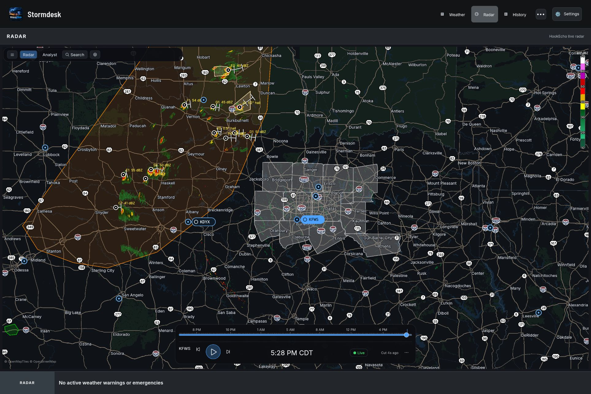
FREE. OPEN SOURCE. YOURS.
Your station. Your forecast. The bigger picture.
A clearer view of the weather around you.
From the first reading to the next storm.
01 / YOUR WEATHER, CONNECTED
Bring your station readings and the forecast into one clear view. Know what it feels like outside. See what changes next.
02 / OPEN BY DESIGN
No subscriptions. No StormDesk account. Your station archive stays on the host you control.
Explore the source ↗
A SIMPLER START
Find your local weather, bring your own station, or join your existing Stormdesk home. Choose a path and see only the setup steps you need.
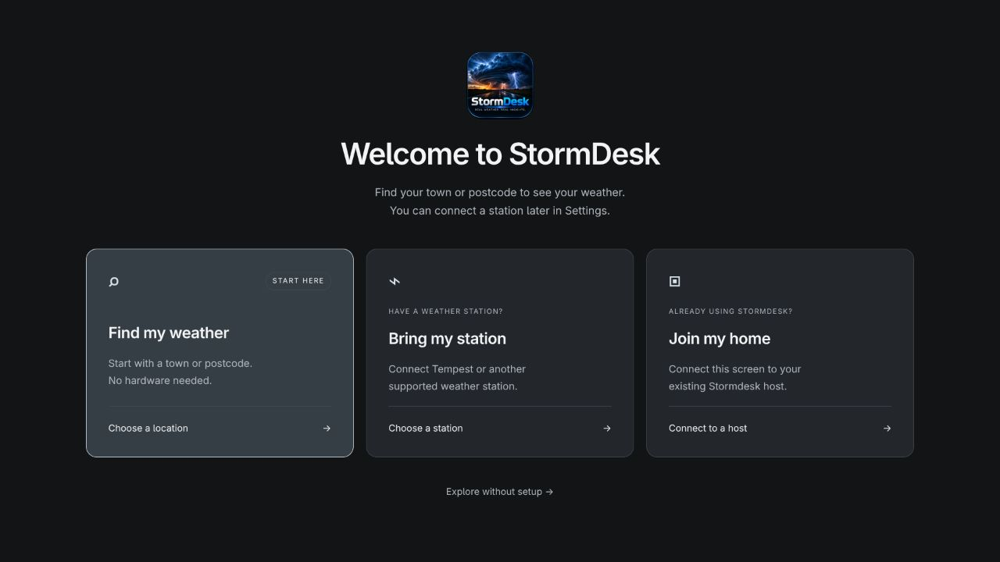
SETTINGS, SIMPLIFIED
Six clear cards put everyday choices within reach. Search for a setting, choose a category, and open specialist tools only when you need them.
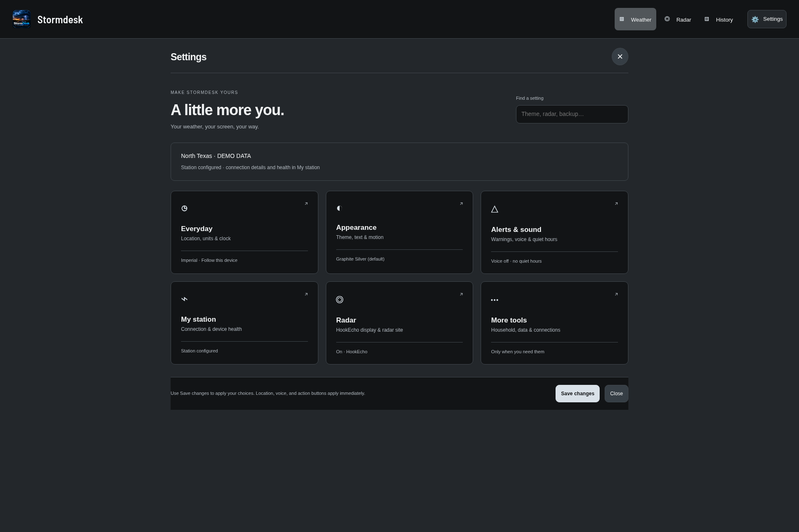
04 / FOLLOW THE SIGNAL
A quick glance before heading out. A closer look when a storm rolls in. Explore the tools that turn readings into useful context.
Give the HookEcho map the screen. Official warnings and emergencies stay visible in a clear bottom banner.
Radar powered by HookEcho.io ↗
Explore severe-weather tools →
A compact current-conditions card leaves room for a forecast list of up to ten days, depending on the provider. Open History for detailed charts and records.
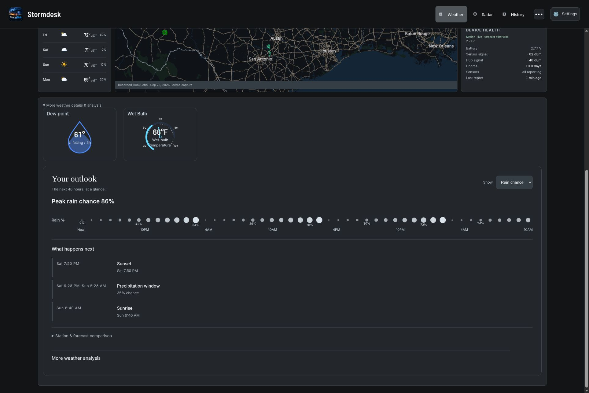
History starts with four clear measurements, then opens detailed charts, records, and time ranges when you want them.
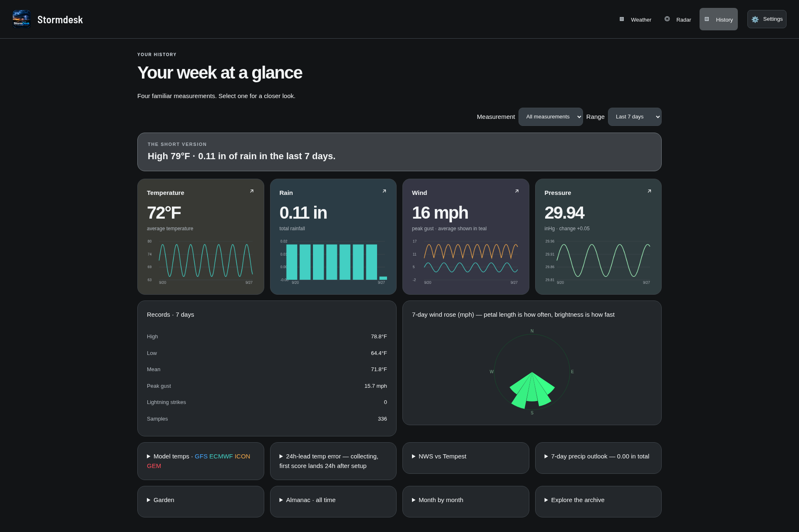
05 / BUILT TO CONNECT
StormDesk connects directly or through the tools your station already supports. Start with a forecast anywhere in the world, then add station readings when you are ready.
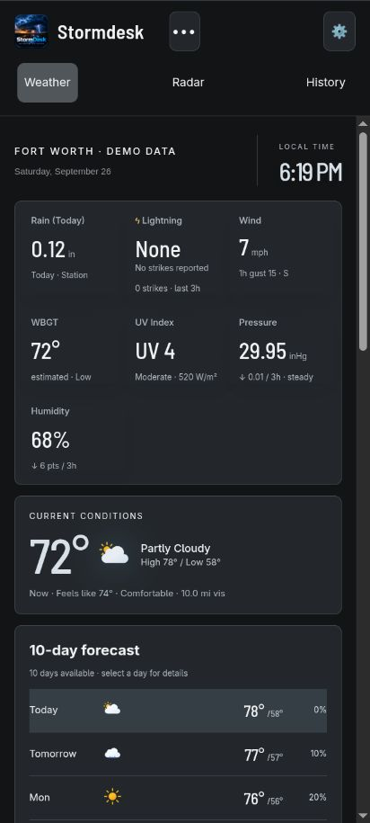
06 / EVERY SCREEN
Run StormDesk on a computer, then view the same household weather on phones, tablets, laptops, and wall displays. Each screen keeps its own theme and display preferences. Rain, Lightning, Wind, WBGT, UV Index, Pressure, Humidity, and Dew point keep that order as the layout adapts.
Don’t own a station? Search for a place and use StormDesk as a worldwide forecast dashboard.
07 / FREE AND OPEN SOURCE
StormDesk is free under the MIT license. There are no StormDesk accounts, advertisements, or subscription tiers. Your station archive stays on the host you control.
Use the browser app or download StormDesk for Windows, macOS, Linux, Raspberry Pi, and Android.
Read the source, report a problem, or contribute improvements through the public GitHub repository.
The website has no analytics scripts, and StormDesk does not require a product account.
TAKE A LOOK AROUND
A recorded tour of the current web design, using labeled demo data. The 4.5.1 desktop packages now include this design.
08 / MAKE IT YOURS
New installs open in Graphite Silver. Choose Settings → Appearance → Theme to try all ten dark palettes. Classic choices, including light, high contrast, and e-ink, remain available; existing saved choices are preserved.
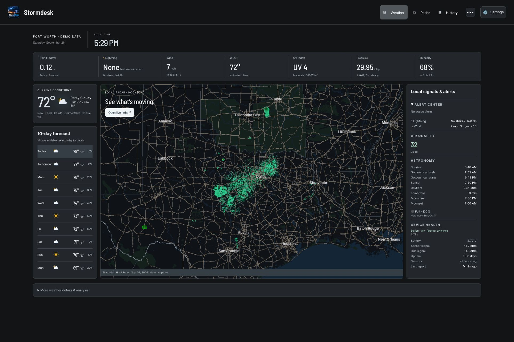
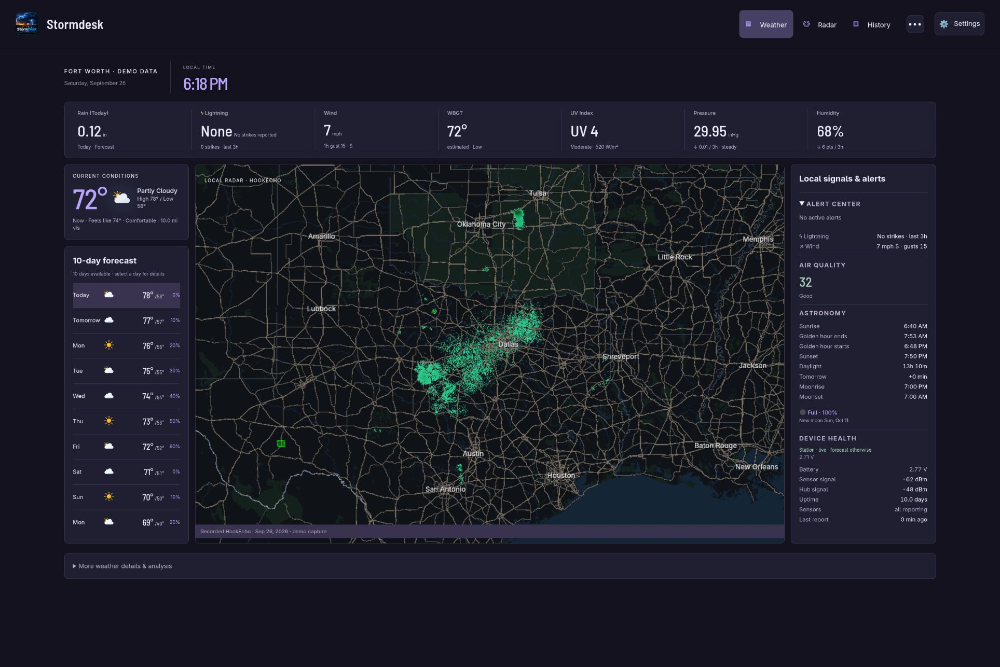
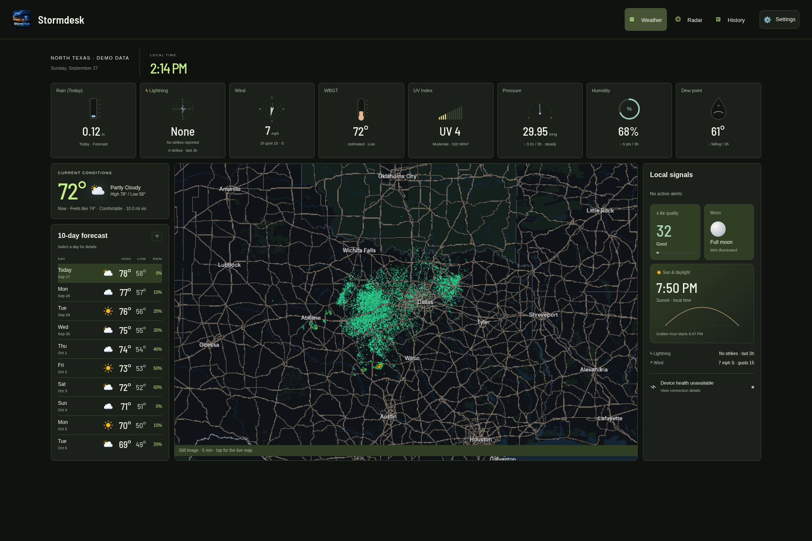
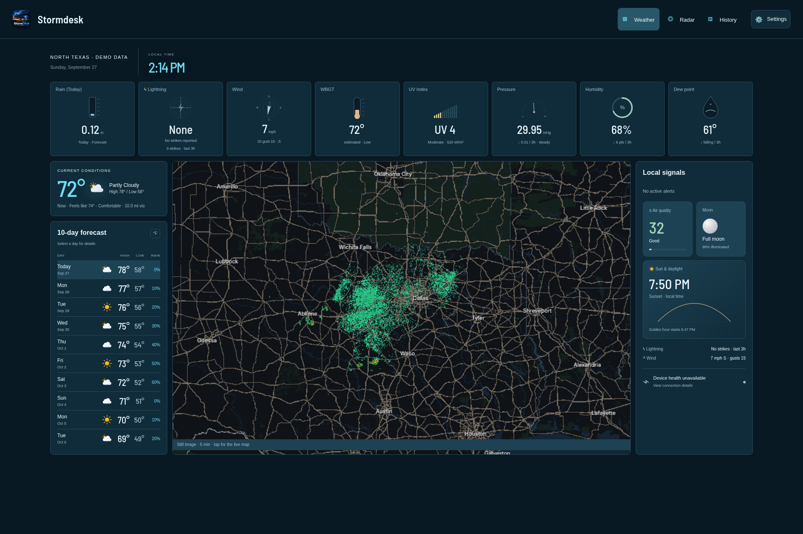
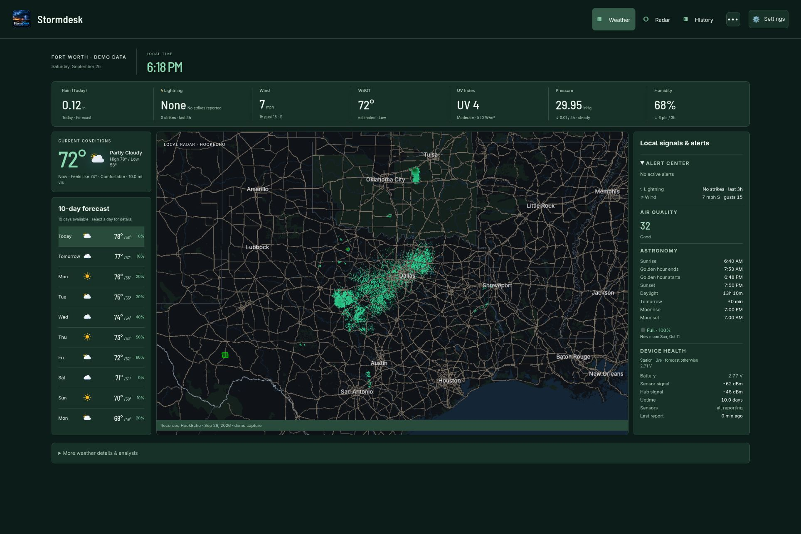
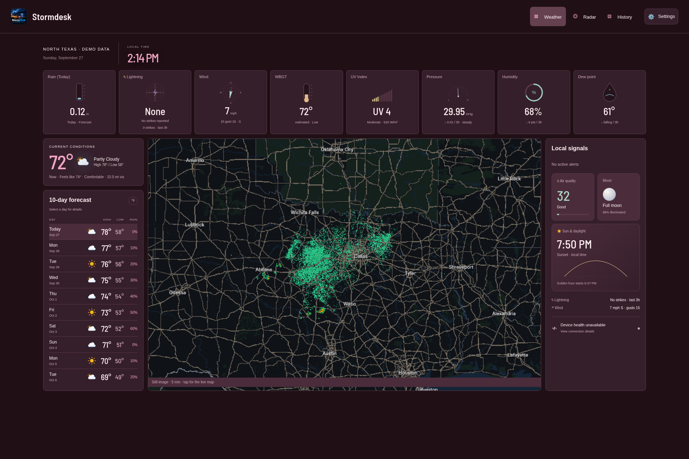
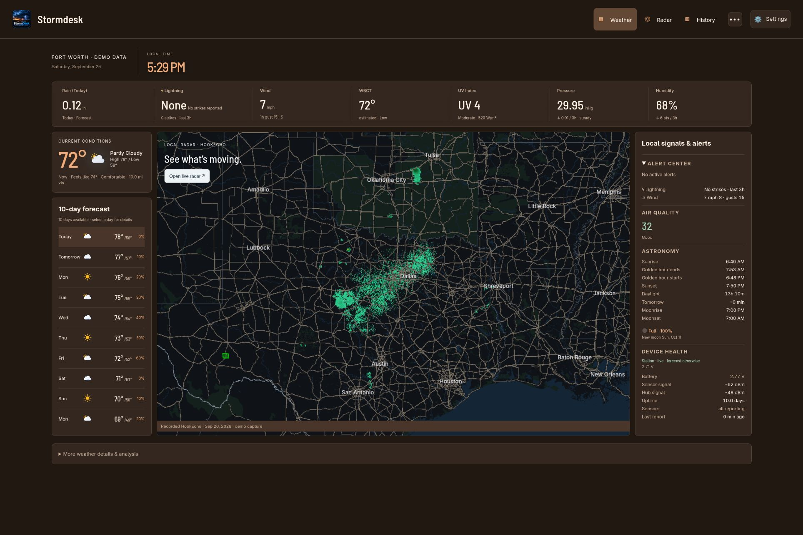
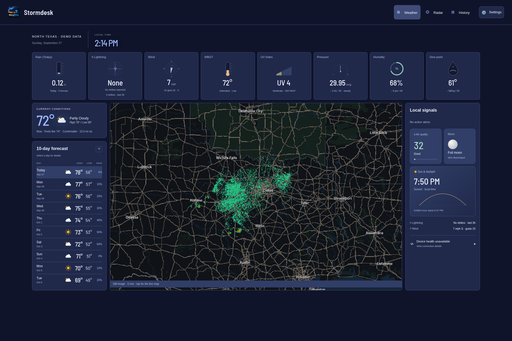
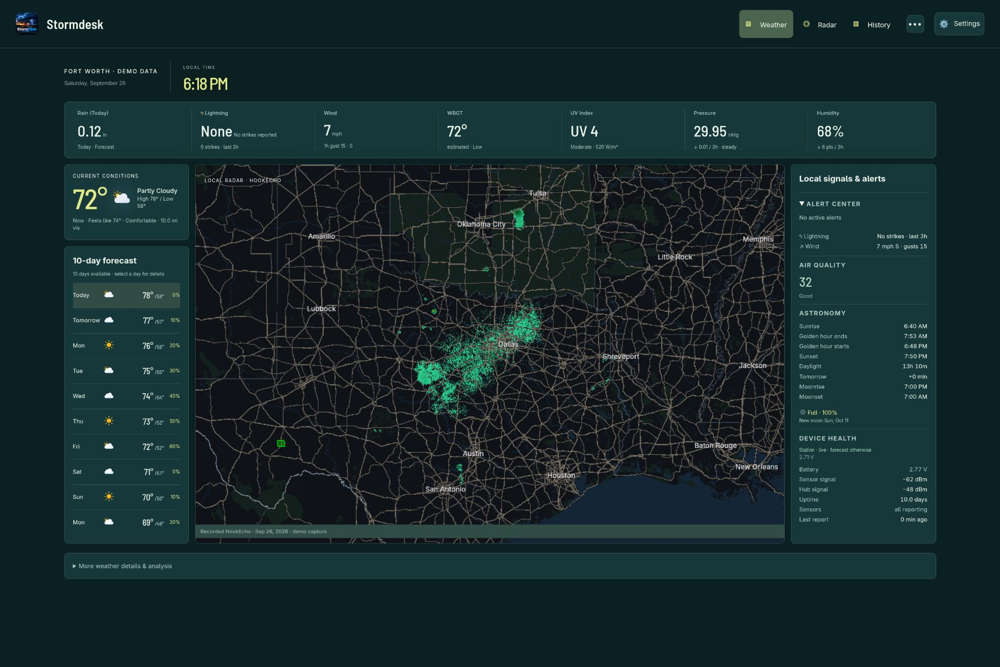
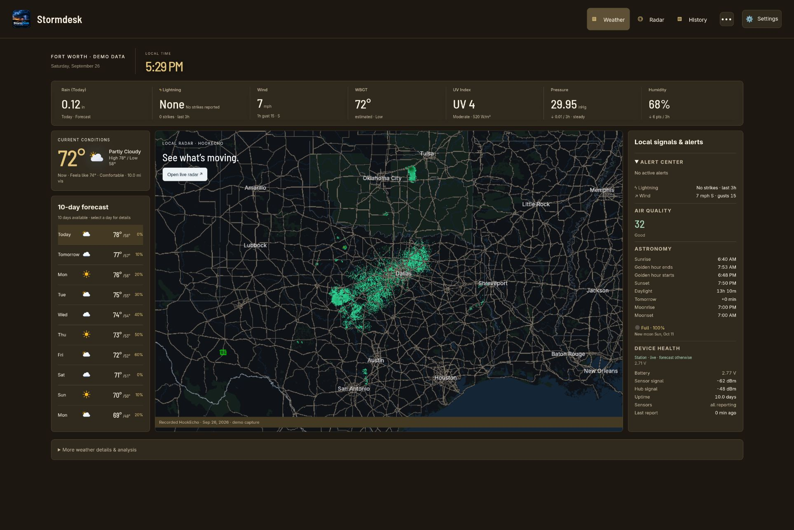
09 / GOOD TO KNOW
No. Choose “Find my weather,” search for your town or postcode, and StormDesk will use worldwide forecast data.
Yes. A running StormDesk host can serve your household devices. Presentation settings stay local to each screen.
Returning to the same address preserves that browser’s settings. Moving from stormdesk.pages.dev to app.mystormdesk.com creates a new browser origin, so you will need to set up or pair that address once.
Start with the setup and troubleshooting guide. If the answer is not there, open an issue on GitHub.
Charcoal and amber.